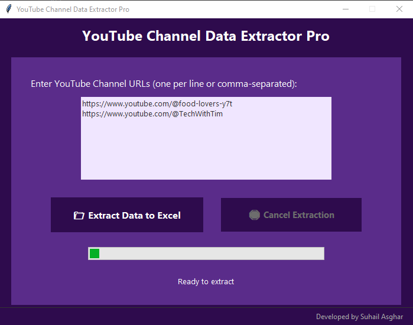

YouTube Multi Channels Data Extractor Pro
Features & Benefits
Extract All Videos
Pulls data from 1 video or 500+ at once — no limits.
Title + Description
Full text copied accurately — no missing characters.
Smart Auto-Tagging
AI-powered tags like “Lahore Street Food” — instantly categorized.
Real Upload Date
Not fake — actual publish date from YouTube.
High-Quality Thumbnails
Clickable links to full-res images — perfect for reports.
View Count + Duration
Track performance instantly — no manual counting.
Video Link
One-click access to each YouTube video — opens in browser.
Channel Name
Always included for context — never lose track.
Tool Interface
*Real output — extracts titles, views, links, and more from multiple channels